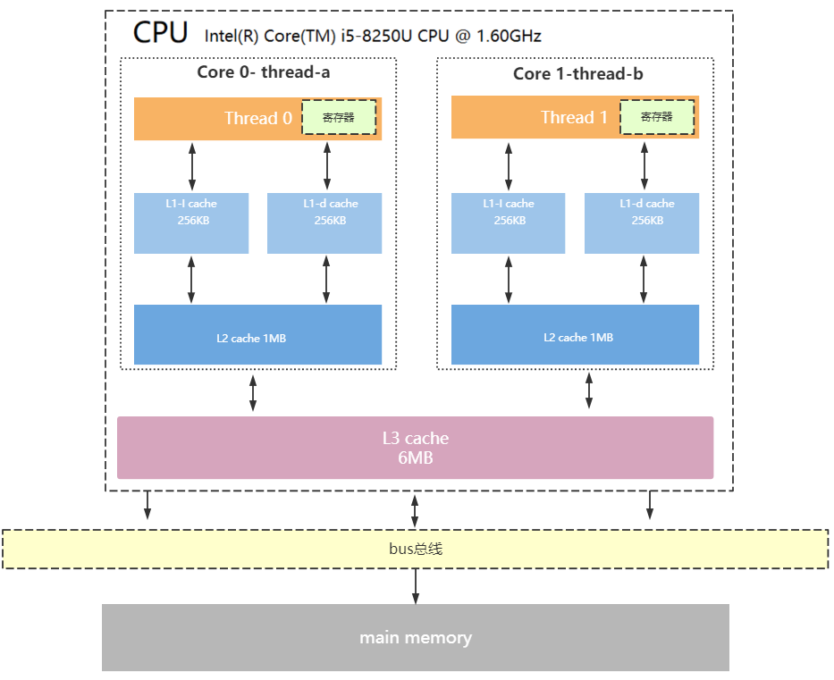

CPU缓存结构
现代CPU为了提升执行效率，减少CPU与内存的交互(交互影响CPU效率)，一般在CPU上集成了多级缓存架构，常见的为三级缓存结构
- L1 Cache，分为数据缓存和指令缓存，逻辑核独占
- L2 Cache，物理核独占，逻辑核共享
- L3 Cache，所有物理核共享 
存储器存储空间大小：内存>L3>L2>L1>寄存器；
存储器速度快慢排序：寄存器>L1>L2>L3>内存；
还有一点值得注意的是：缓存是由最小的存储区块-缓存行(cacheline)组成，缓存行大小通常为64byte。
比如你的L1缓存大小是512kb,而cacheline = 64byte,那么就是L1里有512 * 1024/64个cacheline
CPU读取存储器数据过程
1、CPU要取寄存器X的值，只需要一步：直接读取。
2、CPU要取L1 cache的某个值，需要1-3步（或者更多）：把cache行锁住，把某个数据拿来，解锁，如果没锁住就慢了。
3、CPU要取L2 cache的某个值，先要到L1 cache里取，L1当中不存在，在L2里，L2开始加锁，加锁以后，把L2里的数据复制到L1，再执行读L1的过程，上面的3步，再解锁。
4、CPU取L3 cache的也是一样，只不过先由L3复制到L2，从L2复制到L1，从L1到CPU。
5、CPU取内存则最复杂：通知内存控制器占用总线带宽，通知内存加锁，发起内存读请求，等待回应，回应数据保存到L3（如果没有就到L2），再从L3/2到L1，再从L1到CPU，之后解除总线锁定。
CPU为何要有高速缓存
CPU在摩尔定律的指导下以每18个月翻一番的速度在发展，然而内存和硬盘的发展速度远远不及CPU。这就造成了高性能能的内存和硬盘价格及其昂贵。然而CPU的高度运算需要高速的数据。为了解决这个问题，CPU厂商在CPU中内置了少量的高速缓存以解决I\O速度和CPU运算速度之间的不匹配问题。
在CPU访问存储设备时，无论是存取数据抑或存取指令，都趋于聚集在一片连续的区域中，这就被称为局部性原理。
时间局部性（Temporal Locality）：如果一个信息项正在被访问，那么在近期它很可能还会被再次访问。
比如循环、递归、方法的反复调用等。
空间局部性（Spatial Locality）：如果一个存储器的位置被引用，那么将来他附近的位置也会被引用。
比如顺序执行的代码、连续创建的两个对象、数组等。
CPU运行安全等级
CPU有4个运行级别，分别为：
ring0
ring1
ring2
ring3
Linux与Windows只用到了2个级别:ring0、ring3，操作系统内部内部程序指令通常运行在ring0级别，操作系统以外的第三方程序运行在ring3级别，第三方程序如果要调用操作系统内部函数功能，由于运行安全级别不够,必须切换CPU运行状态，从ring3切换到ring0,然后执行系统函数，说到这里相信大家明白为什么JVM创建线程，线程阻塞唤醒是重新操作了，因为CPU要切换运行状态。
下面我大概梳理一下JVM创建线程CPU的工作过程
step1：CPU从ring3切换ring0创建线程
step2：创建完毕,CPU从ring0切换回ring3
step3：线程执行JVM程序
step4：线程执行完毕，销毁还得切回ring0
操作系统内存管理
执行空间保护
操作系统有用户空间与内核空间两个概念，目的也是为了做到程序运行安全隔离与稳定。
由空间划分引深，CPU调度的基本单位——线程可划分为：
1、内核线程模型(KLT)
2、用户线程模型(ULT)
内核线程(KLT)：系统内核管理线程(KLT),内核保存线程的状态和上下文信息，线程阻塞不会引起进程阻塞。在多处理器系统上，多线程在多处理器上并行运行。线程的创建、调度和管理由内核完成，效率比ULT要慢，比进程操作快。
用户线程(ULT)：用户程序实现,不依赖操作系统核心,应用提供创建、同步、调度和管理线程的函数来控制用户线程。不需要用户态/内核态切换，速度快。内核对ULT无感知，线程阻塞则进程（包括它的所有线程）阻塞。
目前常用的JVM使用的是KLT模型。
进程与线程
什么是进程？
现代操作系统在运行一个程序时，会为其创建一个进程；例如，启动一个Java程序，操作系统就会创建一个Java进程。进程是OS(操作系统)资源分配的最小单位。
什么是线程？
线程是OS(操作系统)调度CPU的最小单元，也叫轻量级进程（Light Weight Process），在一个进程里可以创建多个线程，这些线程都拥有各自的计数器、堆栈和局部变量等属性，并且能够访问共享的内存变量。CPU在这些线程上高速切换，让使用者感觉到这些线程在同时执行，即并发的概念，相似的概念还有并行。
虚拟机指令集架构
虚拟机指令集架构主要分两种：
1、栈指令集架构
2、寄存器指令集架构
关于指令集架构的wiki详细说明：https://zh.wikipedia.org/wiki/%E6%8C%87%E4%BB%A4%E9%9B%86%E6%9E%B6%E6%A7%8B
栈指令集架构
设计和实现更简单,适用于资源受限的系统;
避开了寄存器的分配难题:使用零地址指令方式分配;
指令流中的指令大部分是零地址指令,其执行过程依赖与操作栈,指令集更小,编译器容易实现;
不需要硬件支持,可移植性更好,更好实现跨平台。
寄存器指令集架构
典型的应用是x86的二进制指令集:比如传统的PC以及Android的Davlik虚拟机。
指令集架构则完全依赖硬件,可移植性差。
性能优秀和执行更高效。
花费更少的指令去完成一项操作。
在大部分情况下,基于寄存器架构的指令集往往都以一地址指令、二地址指令和三地址指令为主,而基于栈式架构的指令集却是以零地址指令为主。
Java符合典型的栈指令集架构特征，像Python、Go都属于这种架构。